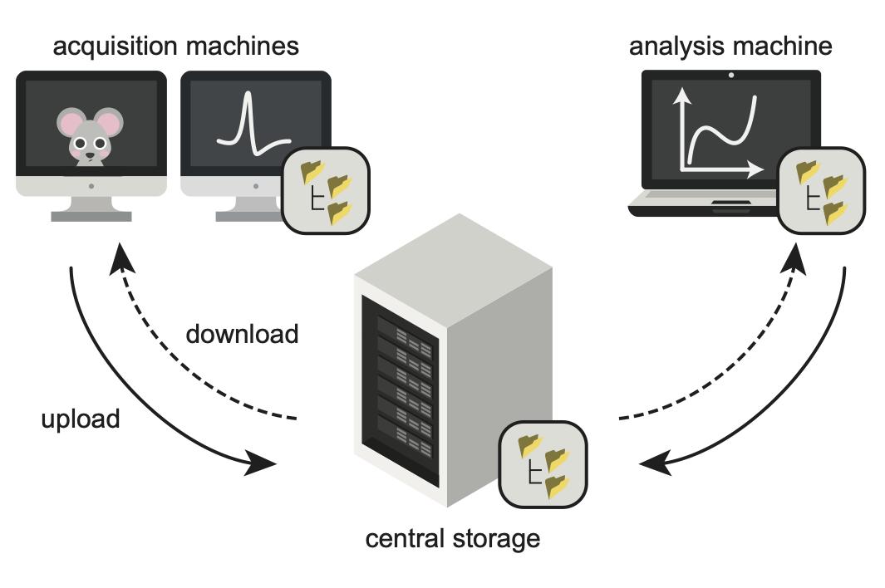
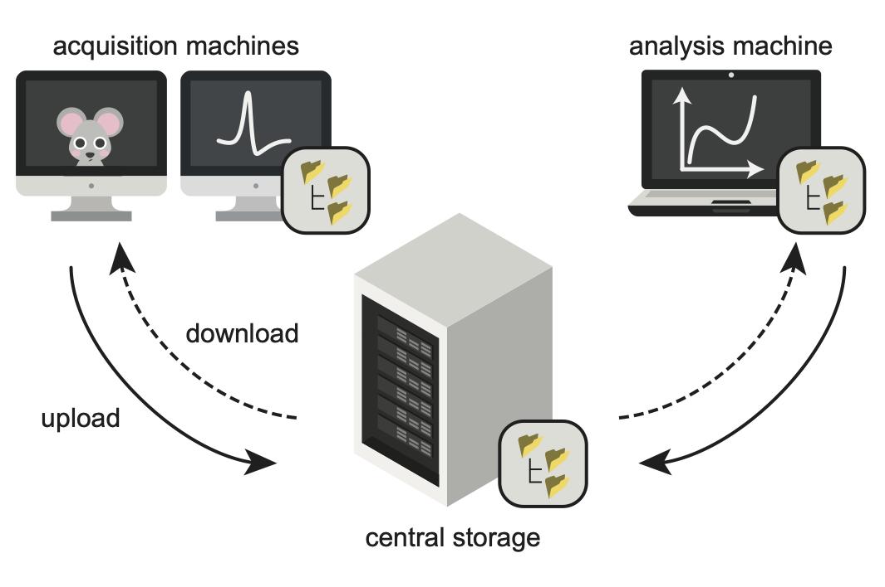

Set up a project#
The first section of this guide will set up a “local-only” project that can manage creation and validation of project folders. This requires only minimal configuration to get started.
To see how a datashuttle project can be set up for transfer, visit Set up a project for transfer section.
Selecting Make New Project will take you to the project set up screen.
Enter the name of your project, the path to your project folder and
select No connection (local only) (note that the central-path option
is now disabled).


You will now be able to go to the project manager screen:


First, import datashuttle and set up a project with the project_name.
If a project already exists, this should match the project folder name (i.e. the level above rawdata).
from datashuttle import DataShuttle
project = DataShuttle("my_project_name")
Next, give datashuttle the path to the project folder (this can,
but doesn’t have to, include the project_name)
project.make_config_file(
local_path=r"C:\MyUsername\my_data\my_project_name"
)
The project is now ready for use, and in future can be instantiated only
with the line project = DataShuttle("my_project_name") (i.e. you will not
have to set the local_path again).
If you wish to change the project settings at a later time, use project.update_config_file().
For example, it is possible to immediately validate the project (if it already exists):
project.validate_project("rawdata", error_or_warn="warn")
Setting error_or_warn will display all validation issues, otherwise
it will error on the first one encountered.
New project folders can also be created in the local folder:
project.create_folders("rawdata", "sub-001", "ses-001_@DATE@", datatype=["ephys", "behav"])
Now, this project is ready for creating and validating folders to the NeuroBlueprint standard. See create folders and validate folders for details.
If you would also like to transfer files to a central machine, see the next section.
Set up a project for transfer#
Above, we have set up a datashuttle project by providing the project name
and local path. Transfer across the local filesystem or via SSH is supported.
Therefore, we will need to provide:
central path: location of the project on the central storage machine.
Connection-specific settings (e.g. if using SSH).
 

{kind=link}
How the central path is set depends on whether your connection to central storage is a mounted drive or via SSH.
If you are unsure of your connection method, speak to your lab administrator or IT department.
Connecting to central storage through a mounted drive#
In this case, the central storage machine is mounted as a drive on the local machine.
We simply need to set the central path as the path to the central project as it appears on the local machine’s filesystem.
Local Filesystem Example
Imagine your central storage is a remote server that is mounted to
your machine at X:\username. You want your project folder to
be located at X:\username\my_projects.
In this case, you can set the central_path to X:\username\my_projects
and with connection_method to local filesystem.
The project folder will be located
at X:\username\my_projects\my_project_name.
You may pass the local or central path without the project name,
(it will be automatically included).
First, click the Make New Project button from the launch page.
The Make New Project screen will be displayed:


Setting up datashuttle is as simple as entering the Project name,
Local Path and Central Path into the relevant input boxes.
The paths do not need to end in the project name—it will be automatically added.
You can paste a path into the input boxes with CTRL+V or use Select`
to navigate to paths on your local filesystem.
By default, the Connection Method is set to Local Filesystem, so
this does not need to be changed.
Once all information is input, click Save to set up the project.
You can then navigate to the Project Manager screen by clicking the
Go To Project Screen that appears.
Note
The contents of the input boxes can be copied with
with CTRL+Q, or opened in the system filebrowser with CTRL+O.
We will first import the DataShuttle class and initialise
it with the project_name:
from datashuttle import DataShuttle
project = DataShuttle("my_first_project")
Next, the make_config_file() method can be used to set up a new
project with the desired local path, central path and
connection method.
project.make_config_file(
local_path=r"C:\my_local_machine\username\my_projects\my_first_project",
central_path=r"X:\a_mounted_drive\username\my_projects\my_first_project",
connection_method="local_filesystem",
)
Connecting to central storage through SSH#
Another common method of connecting to a central storage machine is via SSH.
To set up SSH connection we need to provide:
central_host_id: This is the address of the server you want to connect to.
central_host_username: This is your profile username on the server you want to connect to.
central path: This is the path to the project on the server.
SSH Example
Let’s say the central project was stored on a remote server with
address ssh.swc.ucl.ac.uk, and your account username on the server
is myusername.
We want to store the project at the location (on the server)
/ceph/my_lab/my_name/my_projects/project_name/.
Then the settings would be:
central host id: ssh.swc.ucl.ac.uk
central host username: myusername
central path: /ceph/my_lab/my_name/my_projects/project_name/
You may pass the local path and central path without the project name, it will be automatically included.
Note that Linux-based shortcuts (e.g. ~ for home directory) are not permitted.


When setting up a new project, the project name and local path can be input exactly the same as when setting without SSH.
Next, input the Central Host ID, Central Host Username and
Central Path as described above.
Clicking Save will save these project configs. A button
Set up SSH Connection will appear. Click to
confirm the server ID and enter your password
(you will only need to do this once).
The connection_method configuration must be set to "ssh"
to use the SSH protocol for data transfers.
Enter the central_path, central_host_id and
central_host_username as described above.
project.make_config_file(
local_path=r"C:\path\to\local\my_projects\my_first_project",
central_path="/nfs/path_on_server/myprojects/central",
connection_method="ssh",
central_host_id="ssh.swc.ucl.ac.uk",
central_host_username="username",
)
Next, a one-time command to set up the SSH connection must be run:
project.setup_ssh_connection()
Running setup_ssh_connection() will require verification
that the SSH server connected to is correct (pressing y to proceed).
Finally, your password to the central server will be requested (you will only need to do this once).